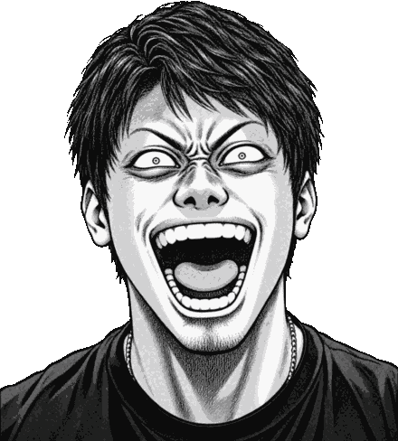

は
は
は
は
は
は

ダイスケ
読み込んでいます…
※これはAIによるロイヤリティフリー画像のはずです
TA
卍
I
NOTE
?
▲
—
ボタン位置
左利き
右利き
管理
ログアウト
地図
ピンで見る
パーセント
ロング率
特定
GO・Uber・バラシ
トロフィー
集めるもの
日報
写真で取り込む
お知らせ
使い方
フィードバック
意見を送る
設定
知らせ・ボタン位置
▼
記録
入れる
いま
どこへ行く
グラフ
時刻と金額
イベント
今日・明日
もっと
ほかの画面
過去の記録
乗り場
営業曜日
期間
だれの
全員
自分だけ
絞り込みを解除
—
合計
¥0
—
記録の数
0
1日当たり
¥0
1本の平均金額
—
ロングの割合
—
—
粛清
きろく
完了